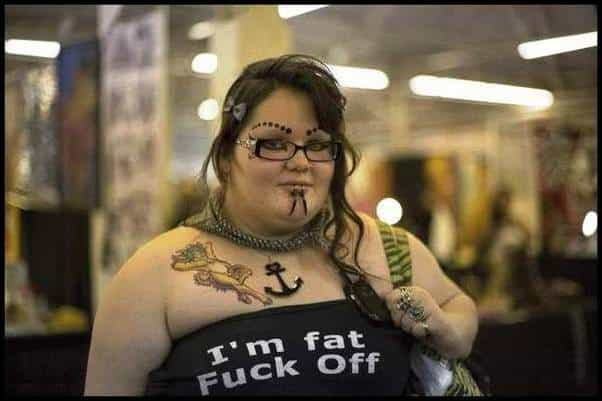
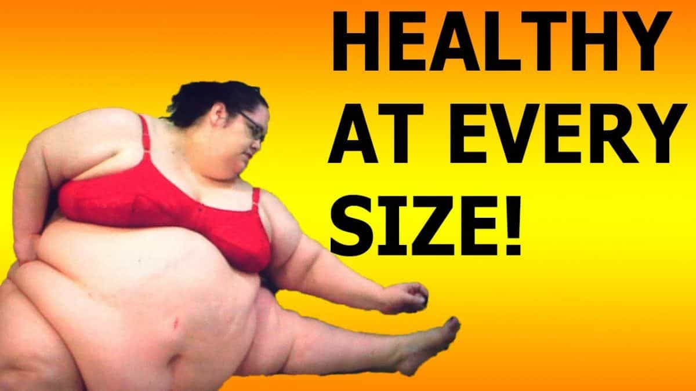
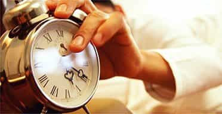
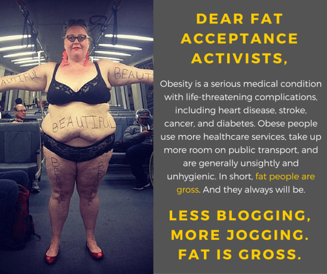
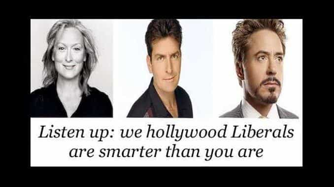

< < < Back
Why Liberals Are So Physically Monstrous And Repulsive – Return Of Kings
No one wants to hear that they are ugly. It is a physical manifestation that one is not attractive enough for the opposite sex to pass on their genes. By nature, humans want to have access to the highest value mate available. It is one of the simplest insults yet one of the most effective, unless the target knows, basing his reasoning on facts, that according to criteria that have not changed since the dawn of time, he or she is not ugly but more attractive than a large portion of the population.
We have observed extensively how feminism and other leftist principles can ruin someone’s appearance in mere years. Even the science that those liberals love so much confirms it. But by dissecting what causes these extreme changes, we can call out its supporters and give them the dose of truth that could help them see the light if they did not refuse to ingest it.
What is voluntary ugliness?

We will not include here cases of disfigurement due to birth defects, accidents or diseases. We will focus on manageable physical beauty. Universal and eternal beauty standards exist: men should be tall, muscular, visually successful etc. Women should be young, fertile, have long hair, feminine faces, big breasts, balanced, round buttocks among other things. Optimum beauty can be synthetically engineered as we know what are its key elements.
Liberals are not born uglier. They voluntarily remain ugly or become uglier to fit a narrative. “Appearance is ideology”. It takes a special kind of hypocrisy to call something that is universally seen as ugly “beautiful” and vice-versa. Now let’s get to the roots of liberal ugliness.
Absence of hardships
Socially privileged people or those born with no deformity won’t have to work as hard to reach attractiveness as they know that they have a safety net. They can spend more time at university, listening for hours to liberal professors who never worked a day in their life and believe in social justice. They will let themselves go and become ugly if they believe that “beauty is what is inside”.
They also have a weaker bond with their peers. Their school of thought neglects the notions of realism or adversity, left-leaning voters tend to see human relationships, such as friendship, as granted. They dehumanize their fellow activists and see them more like tools to reach their goals. This is why they care less about each other’s appearance, are less objective when they call something beautiful and can so easily turn on one another.

Where are the friends that should tell her the truth?
Whereas those who had to be dedicated to reach beauty know what hard work means. Conservatives understand the sexual market even if they can think that it is unfair and translate it through their conservative political opinion.
Laziness

Staying attractive requires work. I rarely, among the younger generations, came across an obese person that is naturally conservative. Laziness in health reflects itself in politics with the obvious choice of gibs me dat, junk food and claiming that being a sad sack of lard is equivalent to being a cancer patient.
Good looking people tend to earn more money, either through their ability to convince or the inner strength they needed to reach this level of beauty (principle applied to their work ethic that leads to results), hence are more hostile to see their hard-earned wealth redistributed, through welfare for example. That phenomenon could explain why they tend to be conservatives.
It is much harder to work out and watch what you eat than become a fat sod and claim that you are attractive and attack people that still think normally and state the fact that you are ugly.
This is where the “snowflake” moniker comes from: “I am special, look at me” or “I don’t fit the mold, check out my new tattoo”. They see that they do not reach the universal standards of beauty so they want to change its definition and punish those who challenge them. Like a sport where you can reach the top only through hard work and dedication, but someone decides to change the rules at the last minute then accuses the others of cheating.
Absence of realism

Right-wing people, because they decide to accept life as it is (even if they hate it), know that nothing comes for free and that effort is always needed.
One of the core values of the Left could be summed up with “I do not have to make any sacrifices, things will be given to me and people will accept me as I am.” Due to biology and reality, we know that this is impossible.
Quite often, liberals justify their failure to succeed in the current system because of someone else holding them down. They have no one else to blame but themselves and still try to bring others down to their level. The people that call for change are almost always the ones that fail in the already existing order.
The Left made the refusal of reality their standard. Looks matter, money doesn’t make you happy but is still essential, not everyone is equal, one cannot help the whole world, etc. Those truths can not be accepted as it would crush social warrior’s very existence
This study (like anyone with a pair of eyes) confirms that conservative female politicians tend to display ultra-feminine attributes (long hair, dresses, softer body language) to attract or convince higher value men from the same political tribe. Liberal female politicians always seem more masculine (read “ugly”)
Mental Gymnastics

Liberals can call a morbidly obese woman with a shaved head and large tattoos “beautiful” or “inspirational”, just like an onlooker will pretend to find modern art beautiful just to be part of the circle of smug liberals when that “art” is often nothing more than an actual pile of shit.
Equality is a false god.They cannot admit they are wrong or the narrative would collapse. Effeminate men with perceived low social status are not attractive to women just like masculine women obsessed with being strong and independent are unattractive to men.
Leftists are also guilty when they accept media lies. Either they do not have the ability or choose not to see through the ideological manure the Mainstream media feeds them (I would believe the latter). This is also why Liberals want to control the language and redefine what words mean in order to support their dogma.
Virtue signaling

By advertising their ugliness as beauty and showing media support to ugly people, liberals convey the message that ” they can see past the physical aspect and be SO progressive”. Nothing could be further from the truth, especially in their private life. But they must sing their false song when they are broadcasted. Following the laws of the sexual market, if their survival depended on it, ugly feminist land-whales would quickly learn that it is an advantage to look good.
There are genuinely attractive Liberals, those who are exposed in the media or have some degree of elite-approved fame. They are attractive because it is needed to sell what the people in charge push for, because beauty and sexual attraction sell. Ugliness does not.
Those famous left-wingers are what French author and ideologist Alain Soral calls the “thought police auxiliaries”, who enforce the Elite’s agenda and are rewarded through their zeal.
“Liberal” beautiful celebrities only act liberal. They do not want to share their wealth with the poor, open their house to refugees or go for a walk with bodyguards that advocate for gun control by remaining unarmed. They only follow what they are told to do, to get attention and surf the wave of political correctness. Or their bosses will blacklist them and destroy their careers.
La laideur, monopole de la gauche?
I am the first to agree that they are also ugly, fat conservatives. What is unacceptable is if they are happy with their situation and do nothing to change it.
In our age of cultural collapse, it is undeniable that a person that intentionally becomes ugly tends to vote left where the majority of beautiful people among the general public think towards the right.
Must See: 27 Attractive Girls Who Became Ugly Freaks Because Of Feminism


{kind=link}